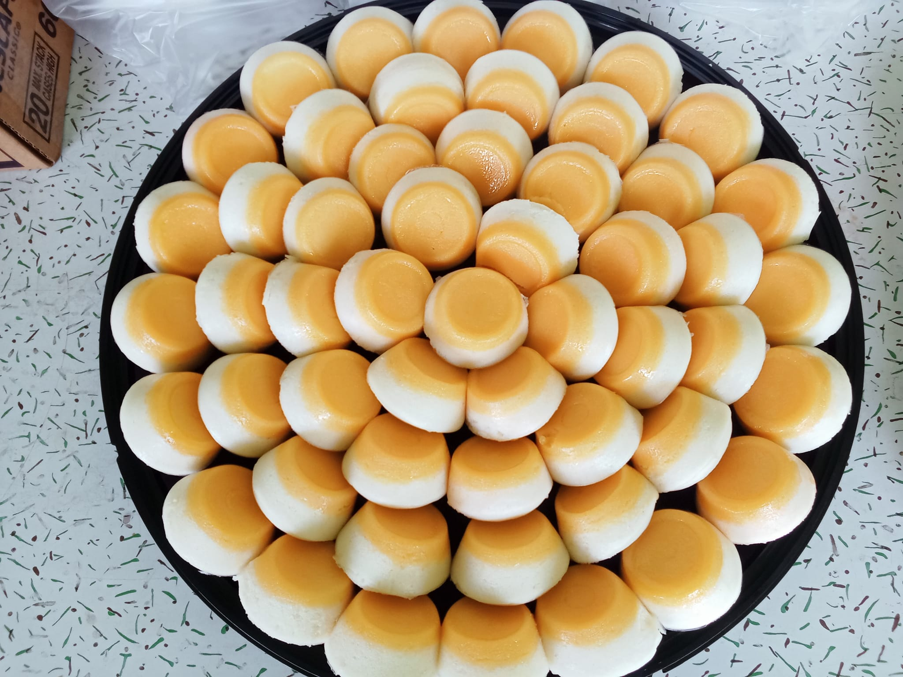

Halo-Halo ₱90
Halo-halo is a famous dessert in the Philippines. It is composed of various ingredients that are all mixed together, along with shaved ice and evaporated milk.Some of he common ingredient used to make Halo-halo are sugar palm (kaong), boiled kidney beans, flat rice crisps (pinipig), coconut gel (nata de coco), ripe jackfruit, colored gelatin, tapioca pearls, sweetened plantains, and macapuno.

Puto-Flan ₱500
Leche Puto or Puto Flan is a combination of Leche Flan and Puto. This is a type of dessert, as far as I am concerned because it is sweet and tastes like a native version of custard cake. I liked it a lot, but I had to control myself because it is so rich and sweet.
Fresh-Lumpia ₱100
Lumpiang Sariwa or Fresh Spring Roll is a vegetable dish composed of different vegetables with a soft (unfried) wrapper garnished with sweet sauce and crushed peanuts. Some popular variations of this dish are lumpiang ubod (made with heart of palm) and lumpiang hubad (Unwrapped lumpiang sariwa).

Hamburger ₱70
Biting into a rich, thick burger patty is arguably one of the most satisfying classic dining experiences. Perhaps it is what leads us running again and again to our favorite burger joints. But if you decide to make them, yourself, you’ll have the agency to choose your seasonings, and very importantly, sauces to match your palate. And if flavorful, copious amounts of warm gravy is your preference, you might want to try my Beef Burger Steak recipe.